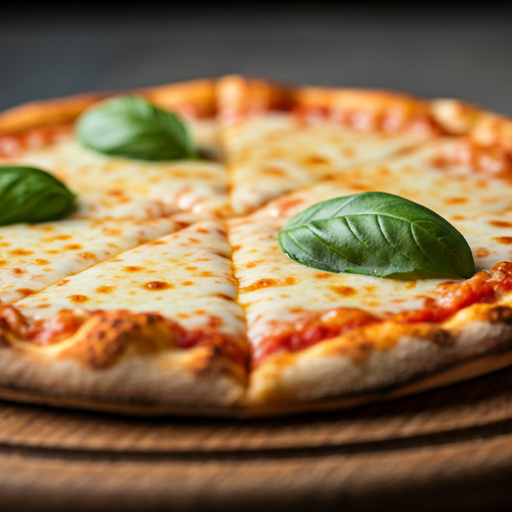

Live Kitchen: Hearth 04
local_fire_department
Hearth Action
🔥 Your pizza is now in the oven! The stone is at 450°C for the perfect char.
Just Now
Current Order
Your Order
Preparing your selection with the finest ingredients.
chef_hat
Maître d'
Chef Marco Rossi
Est. Ready
6 mins
Culinary Journey
receipt_long
Received
Order Received
chef_hat
Preparing
Preparing
local_fire_department
Cooking
Cooking
check_circle
Ready
Ready
local_shipping
Delivery
Out for Delivery

The Secret Ingredient
Wild Forest Porcini
Sourced every Tuesday from the misty foothills of the northern ridges, our porcini mushrooms are flash-seared in garlic butter before they touch your pizza base, ensuring a deep, earthy intensity that standard mushrooms simply can't match.
Live Stats
Oven Temp
452°C
Humidity
12%
Prep Quality
Optimal
verified
Authentic Neapolitan Certified Method